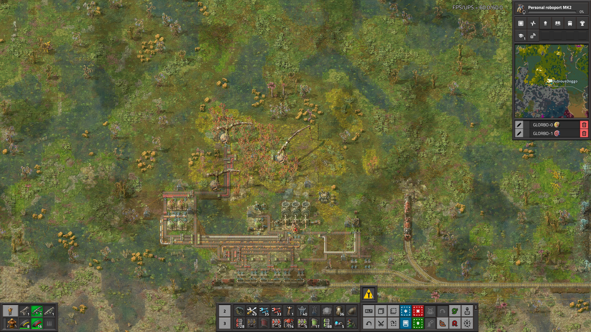
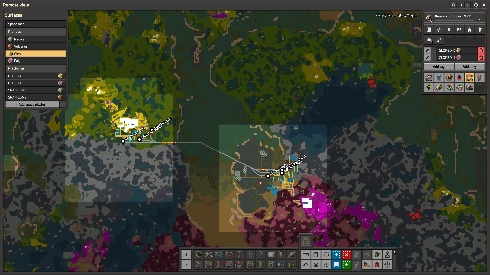
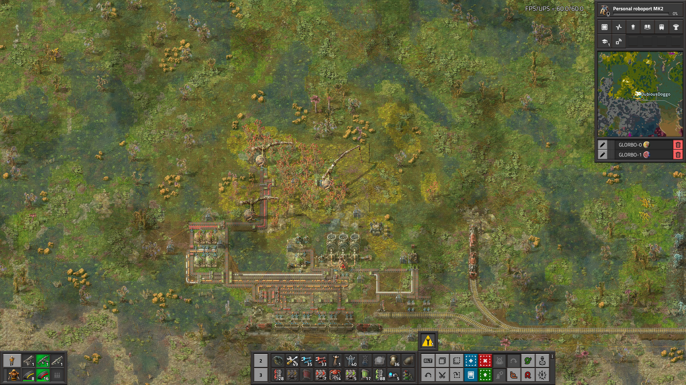
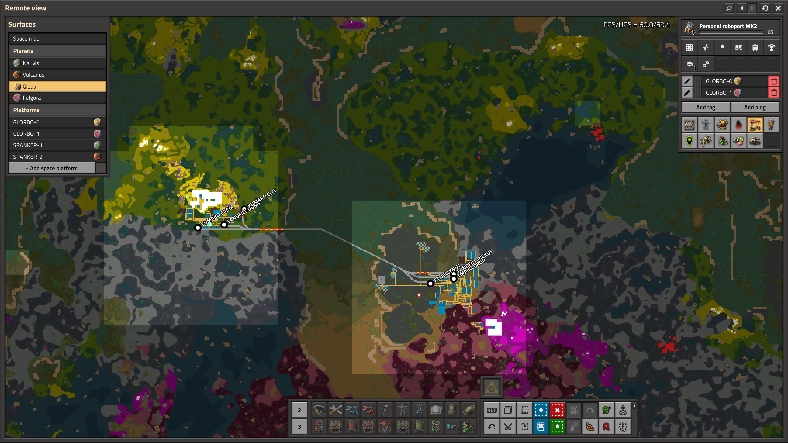

=== FACTORY LOG ===
BEGIN REPORT FROM GLEBA
Yumako production is going well. we have automated production of
artificial Yumako soil, greatly expanding the farmable area. --------
The construction robots sent from the previous NAVUIS shipment are being
used to sod the Yumako marshland and construct addtional farming towers.
A second rail station has been constructed to transport landfill
from FT. JELLYNUT to YUMAKO CITY. This station, along with a new
personnel tram, now share the rail line linking the two loctions.
By reccomendation of CPE a second rail line should be constructed
if the yeild time exceeds 30 seconds, to minimize Yumak mash spoilage
in transit to FT. JELLYNUT.
I've attached some aerial photographs of YUMAKO CITY that we took while
scoping out the location of the new passenger rail station, and a transit
map with the proposed locations.
END REPORT
BEGIN ATTACHMENTS
 

END ATTACHMENTS
END TRANSMISSION


END ATTACHMENTS
END TRANSMISSION
So, here we are;
swirling around this great big soup.
the soup of the universe; universe soup.
The date is 5.26.12025, A.D.
A lot has changed in the last 10000 years.
by my estimate, an exponential amount of things.
I work in the coal mines of "Earth 2.0", to use a 2000's-ism.
tonight when I got off my shift I went up on over to BigHill for a dusting,
got my suit all nice and clean. hacked out a lung too in their clean air
box before smoking a bowl to clear my head — guess some things never change.